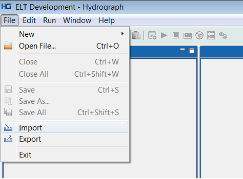
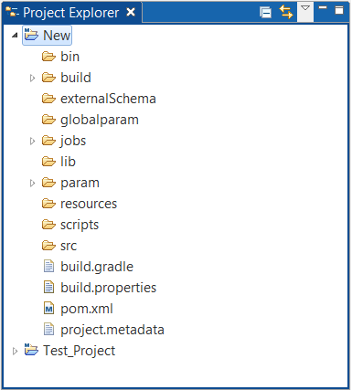

Hydrograph Help
Hydrograph Help
How to Import a Project/Files from File System
Hydrograph Release Version 1.0
To Import Project from File system, users have been provided with options in the File menu -> Import

Users can alternatively Right click Project Explorer -> Import.

The Import option opens up an Import wizard with default folder list displayed by Hydrograph. To import files from the File system, Expand the General folder -> File System -> Next

Select the folder from file system and select the files that need to imported along with the location to import them into.

Finish will import the project will be visible in the project explorer
